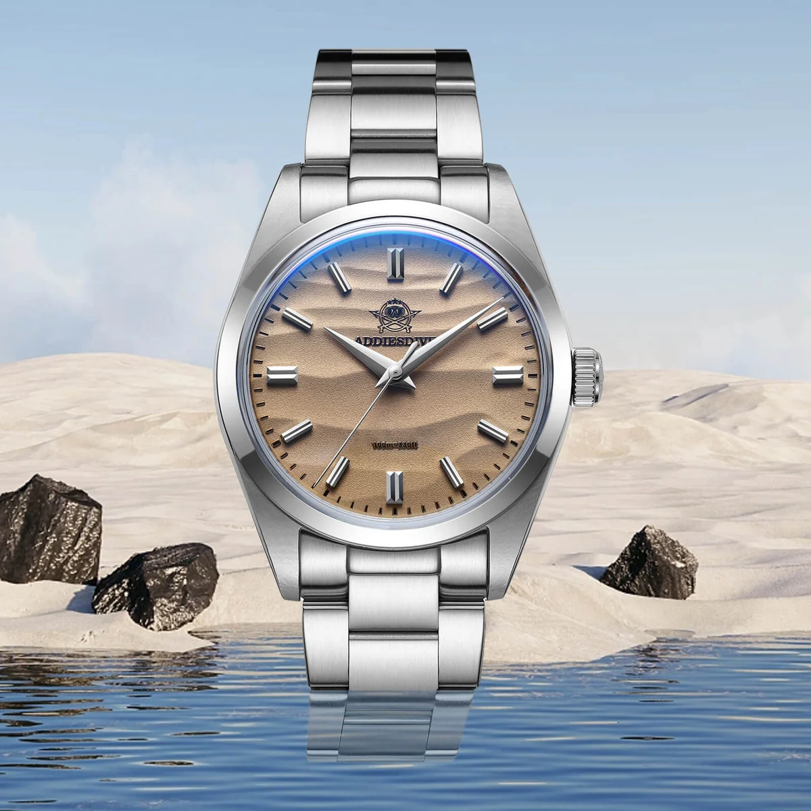
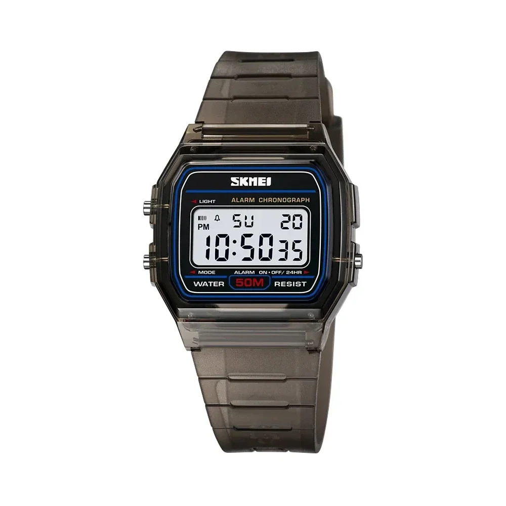
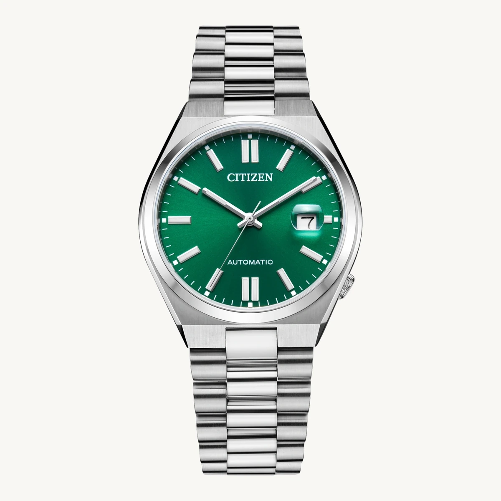
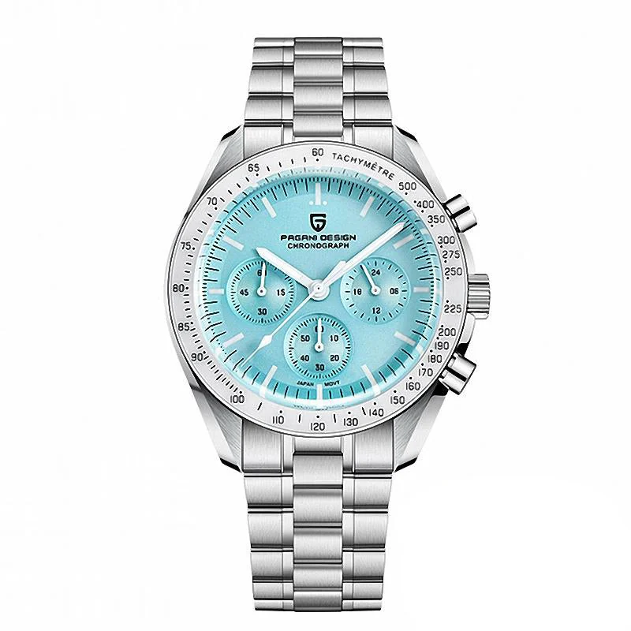
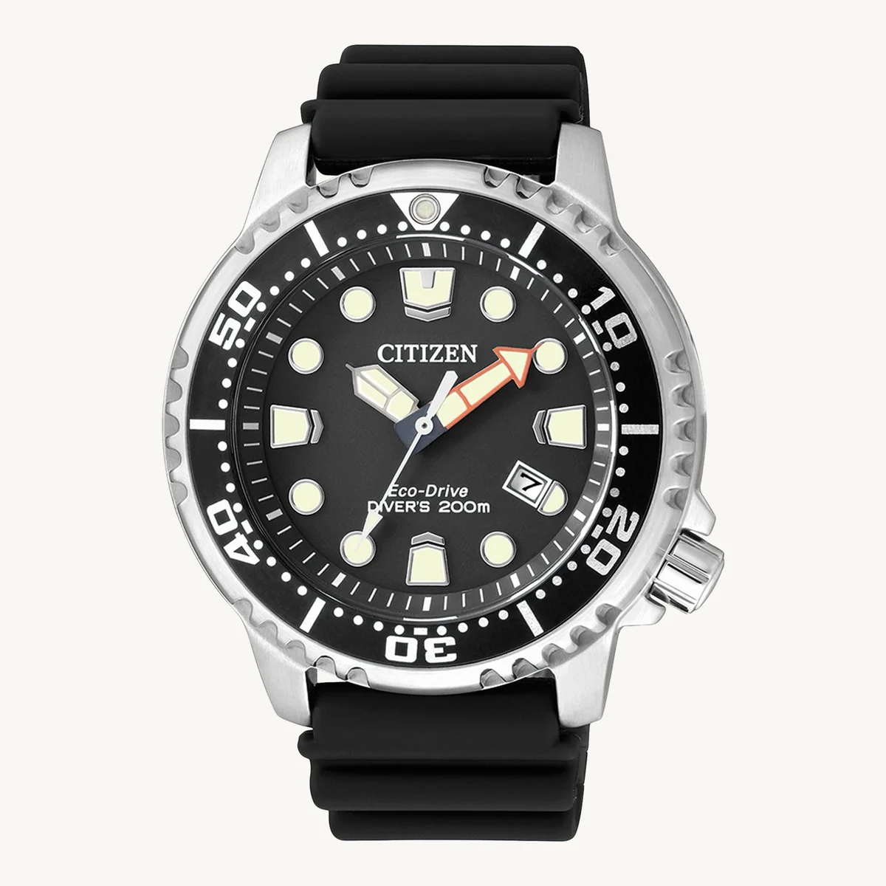
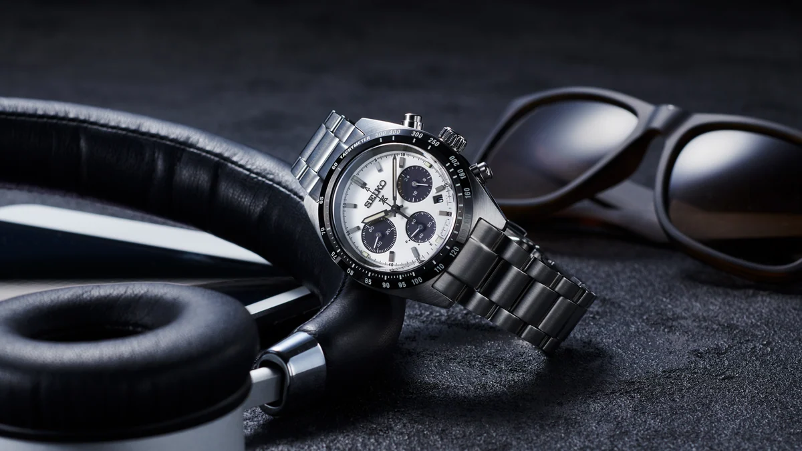

ADDIESDIVE · QUOTIDIEN
ADDIESDIVE AD2030
Un cadran texturé et un boîtier à l'allure épurée, pour les amateurs de détails discrets.
Explorer les ADDIESDIVE ↗L’ART DU TEMPS • ÉDITION 2026
Découvrez 52 montres de Casio, SKMEI, Citizen, ADDIESDIVE, Pagani Design et d’autres marques. Comparez leurs styles, mouvements et dimensions documentées ; 15 références disposent aussi d’un comparatif approfondi.
Explorer les 52 montres Je ne sais pas quoi choisir Voir les fiches chez nos vendeurs partenairesLes montres proposées en affiliation s’achètent chez nos marchands partenaires. Un achat direct n’est proposé sur Atelier Montres que pour les références dont le prix TTC, le stock et la livraison sont vérifiés.
Un vert de cadran qui ne passe pas inaperçu.
Explorer Citizen Tsuyosa ↗LA COLLECTION COMPLÈTE
Le catalogue complet réunit les modèles accessibles, sportifs et automatiques. Les 15 fiches approfondies ci-dessous ne représentent qu'une partie de la sélection.
Ces montants vous aident à explorer notre sélection ; ils ne sont ni des prix de vente sur Atelier Montres ni des disponibilités garanties. Un paiement direct apparaît uniquement pour une offre réellement validée avec son prix total TTC.
Notre sélection 2026
Ces 15 références disposent d’un comparateur approfondi et de photos des modèles exacts dont la publication est déclarée autorisée par l’éditeur. Le catalogue complet en rassemble 52. Les fiches fabricants restent accessibles. La disponibilité et les prix courants doivent toujours être vérifiés chez le vendeur.
Atelier Montres est un comparateur indépendant. Les liens rémunérés, lorsqu'ils sont actifs, sont identifiés clairement au niveau des montres concernées. Les fiches fabricants restent accessibles. Pour les liens partenaires, le paiement, la livraison et les retours sont gérés par le vendeur externe. Si un bouton « Acheter sur Atelier Montres » apparaît, nous sommes le vendeur de cette commande et responsables de sa livraison et de ses garanties.
Votre parcours
Historique enregistré uniquement sur cet appareil.
Diamètres issus des fiches fabricant, lorsqu’ils sont documentés. Une mesure manquante n’est pas estimée. La longueur corne à corne et la forme du boîtier influencent aussi le confort. Guide pour choisir la taille ↗
Chargement des modèles…
Aucune montre ne correspond à ces critères. Vérifiez la référence ou effacez les filtres.
LA SÉLECTION SELON VOTRE STYLE
Explorez trois univers illustrés par de vraies photographies de modèles présents dans notre catalogue, puis affinez votre choix parmi 52 références.

01 / RétroLe charme digital.Écrans rétro, lignes affirmées et montres accessibles.Découvrir les montres rétro ↗
02 / AutomatiqueLa mécanique vivante.Une sélection de mouvements automatiques à explorer.Voir les automatiques ↗
03 / SportL'énergie du chronographe.Boîtiers expressifs, lisibilité et caractère sportif.Explorer le style sport ↗PIÈCES À DÉCOUVRIR
De la sobriété du cadran à l'esprit chronographe : des références exactes pour trouver les détails qui comptent. Aucun prix ou stock n'est inventé.

Un cadran texturé et un boîtier à l'allure épurée, pour les amateurs de détails discrets.
Explorer les ADDIESDIVE ↗
Une silhouette sportive de la gamme Promaster, à comparer selon le poignet et l'usage prévu.
Découvrir les Citizen ↗
Un chronographe au dessin contrasté, avec une composition de cadran inspirée de l'univers sportif.
Explorer les Seiko ↗ACHAT & TRANSPARENCE
LA SÉLECTION ACTUELLE
Les fiches répertorient des montres réelles, avec des sources constructeur et des liens clairement identifiés. Pour un lien externe, le prix, le paiement, l'expédition et le service après-vente relèvent du vendeur concerné.
Comparer le catalogue ↗ACHAT DIRECT · QUAND DISPONIBLE
Si une référence affiche « Acheter sur Atelier Montres » avec son prix TTC, vous pouvez commander auprès de notre boutique : adresse de livraison, paiement sécurisé et suivi de commande. Sans cette offre explicite, la montre reste consultable chez les vendeurs indiqués ; aucun paiement ne vous est demandé par notre site.
Voir les possibilités d’achat ↗LE REGARD HORLOGER · 03 SIGNATURES
Trois références identifiées, photographiées sans transformer leur apparence. Agrandissez les modèles, comparez leurs proportions et consultez les caractéristiques publiées par les fabricants.
LE REGARD ATELIER
Une belle montre commence par des proportions maîtrisées, une lecture claire et un caractère singulier. Nous mêlons pièces accessibles et mécaniques remarquables, sans confondre prestige et prix artificiellement gonflé.
Explorer les montres populairesPlusieurs vendeurs, une même exigence
Programme associé au compte déclaré par l’éditeur. Les liens de produits exacts peuvent être rémunérés ; l’examen final du compte appartient à Amazon. Le paiement s’effectue sur Amazon.
Conditions du programme ↗Bijouterie et horlogerie, programme public annoncé jusqu'à 8 % selon conditions. Accès marchand soumis à acceptation.
Programme CLEOR ↗Marque abordable et colorée. Programme identifié pour les possibilités de référencement ultérieures.
Programme ICE-WATCH ↗Les programmes Awin ne sont pas connectés. Les liens Amazon.fr, lorsqu’ils sont signalés « lien rémunéré », utilisent l’identifiant du compte déclaré par l’éditeur ; le référencement exact des produits peut évoluer.
À SAVOIR
Oui, uniquement pour une montre qui affiche explicitement le bouton « Acheter sur Atelier Montres », un prix TTC et un délai de livraison. Vous passez alors commande auprès de notre boutique et réglez par le prestataire sécurisé indiqué. Si ce bouton n’apparaît pas, aucun achat direct n’est ouvert pour cette référence et les autres liens renvoient au vendeur externe.
Utilisez la case « Comparer » sur les fiches de la collection. Le tableau distingue les caractéristiques confirmées de celles qui restent à vérifier auprès du fabricant.
Les prix et stocks changent selon les commerçants. Nous ne publions pas de prix Amazon non synchronisé : ouvrez la fiche exacte du vendeur via les liens clairement identifiés, puis vérifiez la référence, le prix TTC, la livraison et les retours avant d’acheter. Voir les modèles proposés chez nos partenaires.
Certains liens Amazon.fr peuvent donner lieu à une commission. Chaque lien rémunéré est identifié « lien rémunéré » à proximité de la montre concernée. Les liens vers les fiches fabricants ne sont pas rémunérés. L’approbation définitive du compte partenaire relève d’Amazon.
Mesurez votre tour de poignet et comparez surtout le diamètre, l’épaisseur, la longueur entre cornes et le bracelet. Les fiches précisent les dimensions vérifiées lorsque le fabricant les publie.
Pour un achat passé directement sur Atelier Montres, notre boutique reste votre vendeur : les conditions de vente et le suivi de commande précisent les démarches. Pour un achat effectué sur le site d’un marchand partenaire, vous devez suivre les modalités de retour de ce marchand.
Le catalogue complet
Explorez 52 modèles documentés, des digitales accessibles aux mécaniques de caractère. Comparez les caractéristiques et ouvrez uniquement des offres clairement identifiées avant de choisir.
Explorer toutes les montres